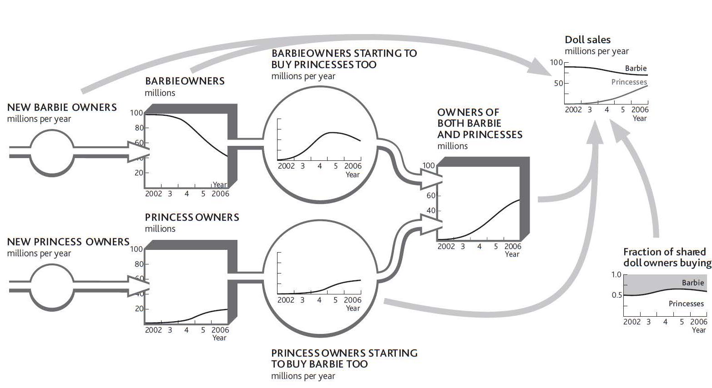

The explanation for Barbie’s sales through time hardly seems obvious or easy. The problem of working out exactly what to do about all these customer flows and sales rates is still more complex. The numbers involved in Barbie’s case will be huge. Advertising budgets of millions of dollars will be allocated by both firms, supporting the efforts of many talented and costly people. A daunting list of vital questions faces these executives. For example,
Figure 7.5 Sources of Barbie Sales When Children May Own Both Types of Dolls
And remember that all these decisions, and more, have to recognize that we want to be profitable too, so spending more on everything is not an option.
You could draw up some broad guidelines and hope they will work. But the chance that these guesses will be anywhere near what would be best is small. You will probably spend large sums of money and effort trying to make something change that will not, put too little effort into moving something that can and should be moved, or do both repeatedly.
If you really want to work out what is best to do at any moment and understand how these best decisions develop through time, then you have no alternative but to find the information on customer flows and choices. Then you must identify how your actions and efforts (along with those of your rivals) are constantly altering these behaviors. Only by using continuous market intelligence on these resources and flows will you be able to make sound decisions on the complex questions of customer rivalry.
The decisive case for taking on these questions and doing the work to find out what is happening and why arises from a point we stressed before—strategic management is all about the flow rates! This is why major global companies are switching their strategic marketing planning to a strategy dynamicsA rigorous, fact-based method for explaining why the performance of an organization has changed through time that allows management to design strategies and policies to improve future performance. basis.
Here are some tips for understanding what is happening in the battle between you and your competitors:
If you sell through intermediaries, such as a consumer goods company selling through retailers, you will need to do the same work for those intermediaries as well as for final customers.
This may all seem a big effort, and a big change from how you currently do things, but remember, this is how the world works, so if you try making decisions without this insight, you will struggle to make the right choices. And remember, your competitors may be ahead of you in this thinking.